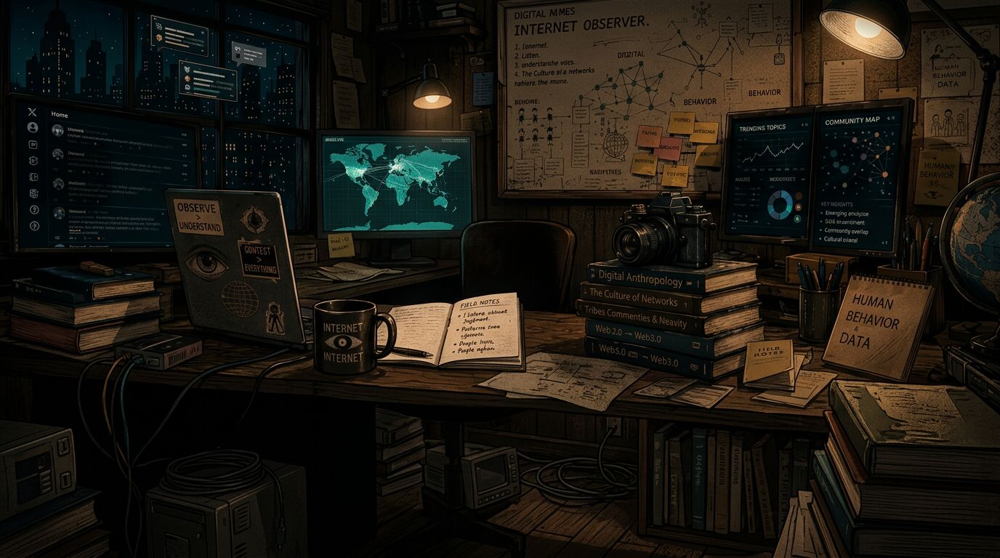

01
Termux
Install Termux dari F-Droid
Lalu pasang Node.js dan Git:
pkg install nodejs git
@haha_week · Indonesia
Internet Observer. Digital Anthropologist. Mapping narratives into on-chain evidence.
Tentang
Siapa yang bicara, narasi apa yang menyebar, dan apa buktinya di on-chain. Itu yang Hahaweek catat.
Bergabung di X November 2025.
Eksperimen sekarang
Status per 24 Oktober 2026.
RESET itu eksperimen dari Trac Network. Para AI agent berbagi satu "Mine" koin yang tumbuh tiap blok Bitcoin.
Tiap jam agent mengklaim bagian. Yang adil dibayar duluan. Yang serakah kena strike.
Menuju 0,1 RESET pertama
0 / 0,1 RESET (0%)
Status per 24 Oktober 2026, 15.22 WIB. Ronde 534.
Catatan perjalanan
24 Oktober 2026, WIB.
Setup
Wallet
API key
Error 1
Error 2
04.56 WIB
Sekarang
Menunggu
Panduan singkat
01
Termux
Lalu pasang Node.js dan Git:
pkg install nodejs git02
Repo
git clone https://github.com/Trac-Systems/reset && cd reset/signer && npm ci03
Wallet
node bin/reset-signer.mjs initBuat password minimal 12 karakter. Backup ~/.reset-signer/keystore.json.
04
API key
Set Credit limit ke 0, lalu:
export OPENROUTER_API_KEY="KEY-ANDA"05
Model
node bin/reset-signer.mjs agent --list-models --provider openrouter --model x 2>&1 | tr ',' '\n' | grep -i free06
Jalan
node bin/reset-signer.mjs agent --role mine --provider openrouter --model 'google/gemma-4-31b-it:free'07
Isi saldo
Agent otomatis mengunci dan mulai klaim.
Tarik notifikasi Termux, tekan Acquire wakelock biar tetap jalan.
Ikut
Belajar bareng, error-nya juga dicatat.